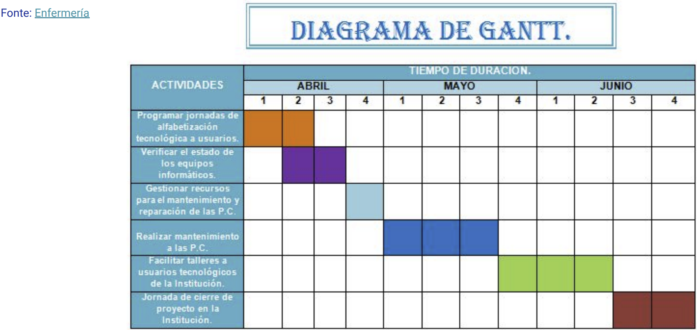

Disciplinas
ENGENHARIA DE SOFTWARE Concluído
Materiais
Vídeo 1 - [UFMS Digital] ENGENHARIA DE SOFTWARE - Módulo 3 - Unidade 1 - Estimativas de software, gerenciamento de tempo, custo e riscos sendProf.ª ministrante: Débora Maria Barroso Paiva
Objetivo
- Entender as principais técnicas para gerenciamento de projetos de software e realizar uma vista geral sobre design de software.
Gerenciamento de projetos de software.
- Estimar;
- Trabalho em equipe;
- Alocação de recursos humanos;
- Gerenciamento de tempo, prazo, qualidade e escopo;
- Análise de riscos.
Importância.
A construção de software é um empreendimento complexo;
Estão envolvidos muitos recursos no desenvolvimento;
Há alto custo para o desenvolvimento do projeto.
PMBoK – Project Management Body of Knowledge.
É uma metodologia internacional para realizar o gerenciamento de projetos.
Contém um conjunto de práticas já sedimentadas em gerenciamento de projetos, coletadas por profissionais envolvidos em projetos de todo o mundo.
Gerenciamento de: integração, escopo, prazo, custo, qualidade, recursos, comunicação, riscos, aquisições e stakeholders.
O PMBoK foi desenvolvido pelo PMI (Project Management Institute).
Estimativas de software.
A estimativa dos recursos, custo e programação das atividades para um esforço de desenvolvimento de software exige:
- experiência;
- acesso a boas informações históricas.
O que são informações históricas?
Como obtê-las?
Como são realizadas nas empresas?
Estimativa de tamanho do software.
Linhas de código:
- são dependentes da linguagem de programação;
- penalizam programas bem projetados;
- difícil de obter em fase de planejamento.
Pontos por função:
- Dimensiona uma aplicação na perspectiva do usuário final, em vez de levar em consideração as características técnicas da linguagem utilizada.
- Somente componentes solicitados e visíveis ao usuário são considerados no dimensionamento da aplicação.
- É uma métrica que pode ser usada para auferir a funcionalidade entregue pelo sistema.
- A técnica é divulgada e normatizada pelo IFPUG (International Function Point Users Group)
- ifpug.org
- No Brasil: Brazilian Function Point Users Group
- bfpug.wordpress.com
- Norma: ISO/IEC 20926 – Software Engineering – Function Point Counting Practices Manual
- Quantidade de arquivos que a função deve manipular – Arquivo lógico interno
- Quantidade de arquivos de aplicações externas – Arquivo de interface externa
- Quantidade de funções ou transações do sistema – Entrada externa
- Quantidade de relatórios e outras saídas solicitadas pelo cliente – saída externa
- Quantidade de consultas – consulta externa
Elaboração de cronograma de software (gestão de tempo).
- Identificar as atividades;
- Identificar dependências entre as atividades;
- Estimar recursos;
- Alocar pessoas;
- Criar diagramas.

Análise e gestão de riscos.
Ajudam uma equipe de software a entender e administrar a incerteza.
Um risco é um problema em potencial – pode ou não ocorrer.
Exemplos de riscos:
- Número de usuários acessando o software ao mesmo tempo maior que o planejado;
- Usuários finais resistem ao sistema;
- Financiamento perdido.
Identificação dos riscos;
Análise dos riscos;
Planejamento dos riscos;
Monitoração dos riscos.
Gerenciamento de custo.
Considere os dados de um projeto:
- 3.550 pontos por função
- Produtividade em Java: 19h/pf
- Custo HH: R$ 30,00
- Custo fixo: 25%
- RoI (retorno de investimento esperado) = 20%
Estime o esforço total em horas, custo fixo e custo de venda.
Esforço total: 3550 * 19 = 67.450 horas
Custo (HH): 67.450 * 30 = R$ 2.023.500,00
Custo fixo: 2.023.500 + 25% = R$ 2.529.375,00
Custo de venda (RoI): 2.529.375,00 + 20% = R$ 3.035.250,00
Considerações Finais
Existem muitas possibilidades relativas ao gerenciamento de projetos de software e cada empresa adota as práticas que considera mais convenientes;
- recursos humanos e financeiros disponíveis;
Trata-se de uma tarefa complexa, desafiadora e que pode determinar o sucesso ou fracasso de um projeto.